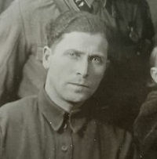
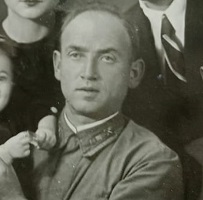
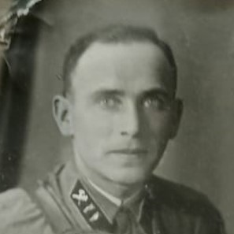
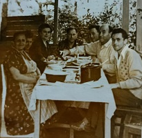
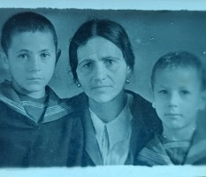

Хронология
1900-1903
Свадьба Хаи и Евсея Миньковых

1904
Родился Захар
Скорее всего в г.Борисов

1906
Родился Лазарь
в г.Борисов
1907
Родился Зелик
место рождения неизвестно

1909
Родился Анатолий
место рождения неизвестно
1909-1938
Евсей в Аргентине

1930?
Переезд в Москву всей семьи, кроме Зелика

1942
Вся семья, кроме Лазаря и Захара в эвакуации
Be Part
Of Our
Story!